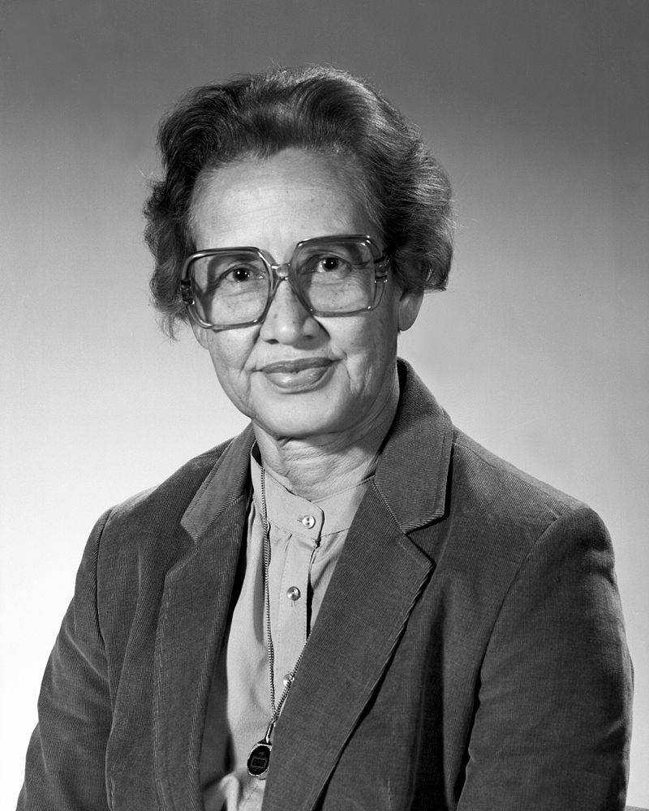

Alan Turing:

Katherine G. Johnson:

Universidad de La Sabana
Programación de nuevas tecnologías
Juan Pablo Franco Rubio
Felipe Alejandro Mendoza Navarrete
0000211236
Es de conocimiento general como algunos individuos cambian la manera en que la sociedad actúa, en este comentario de ingeniera se investigará el amplio impacto que tuvieron tres sujetos en el campo de ingeniería informática. Empezando por el que se podría nombrar máximo pionero y revolucionario del siglo 20 [1], Alan Turing, creador de las “maquinas que pueden pensar” que hoy en día las conocemos como computadoras [2]. Sin estas no sería posible esta carrera y muy probablemente no sería posible algún aparato electrónico inteligente, objetos a los que se esta tan acostumbrados como televisiones inteligentes, celulares inteligentes, tabletas, relojes inteligentes, entre otros. Además de ser el pionero en esto, siempre intento revolucionar a la sociedad para hacerla capaz de muchas más cosas, tanto así que su lema era: “Solo podemos ver hacia adelante una corta distancia, pero también se ve que se debe hacer mucho" [3] y trayendo consigo la tercera revolución industrial.
Para continuar con la gente precursora, Katherine Johnson dio los primeros pasos para la consideración y aceptación de la mujer en el campo de la ingeniería, todo gracias a su mente superdotada, pues se hizo indispensable en los cálculos y las pruebas para llevar al primer hombre a orbitar el planeta [4], eliminando cualquier subestimación y dándole paso a millones de mujeres a este campo de la ciencia.
Finalmente, el pionero más reciente del cual se investigará, Tim Berners-Lee, creador de World Wide Web (WWW), también conocido como la Web, un entorno de información y documentos accesibles a través de internet. Creación que una vez más revolucionaria al mundo para llegar al que se conoce hoy en día. Este sería el comienzo de la revolución digital y de la mano de la inteligencia artificial, la robótica y el internet, ubicaron a la sociedad a la cuarta revolución industrial [5]. Revolución industria que ha generado una necesidad por parte de la sociedad hacia los ingenieros relacionados con la tecnología, especialmente los informáticos debido a su conocimiento de automatizar, analizar y solucionar, la revolución para las industrias vanguardistas.
Al ahondar más acerca de estos personajes, fui entendiendo la gran importancia que tuvieron para formar la sociedad y el mundo como es hoy en día, especialmente en el campo de la ingeniería informática, pues las máquinas de Turing fueron el comienzo de todos aquellos aparatos que hoy en día programamos y estudiamos nosotros, sin aquel invento nuestra carrera seria obsoleta, pues no se podría hacer uso de la tecnología para analizar y organizar información, lo cual es la finalidad de esta. En esta misma página se encuentra Tim Berners-Lee, pues logro globalizar la información a través de la web, web que como ingenieros informáticos se nos enseña a crear, diseñar y mejorar. Sin esta invención no se contaría con este nivel de información al alcance de todos ni se podrían crear paginas para la interacción con gente con nulo conocimiento del tema, el cual es otra de las funciones que tenemos como ingenieros informáticos. La mujer Katherine Jonhson logró revolucionar el campo de la ingeniera y sobrepasar la discriminación por su sexo, abriéndole el camino a millones de mujeres a la ingeniería, su importancia es para la informática como para cualquier otra ingeniería, pero gracias a ella hoy en día contamos con compañeras y amigas en esta rama del conocimiento y aunque aún el porcentaje de hombres es mayor, a medida que ha pasado el tiempo este ira disminuyendo, siendo en los 50s casi nulo el porcentaje a que en algunos países, tales como España, casi el 50% de los ingenieros sean mujeres [6], un gran logro para este género y para la humanidad.
En conclusión, la opinión más acertada acerca de estos tres personajes es que fueron importantes para carreras como Ingeniería Informática, pero esto sería decir poco. Alan Turing, Tim Berners-Lee y Katherine Johnson hicieron posible esta ingeniería y sin sus aportes lo más probable es que ninguno de los estudiantes de esta carrera estaría ahí, buscando como seguir los pasos de estos visionarios y hacer del mundo un mejor lugar.
Bibliografía:
[1] B. J. Copeland, The Essential Turing, Oxford: Oxford University Press, 2004.
[2] M. Tyldum, Director, Código Enigma. [Film]. Estados Unidos: Black Bear Pictures, 2014.
[3] The Alan Turing Institude, «The Alan Turing Institude,» 23 Junio 2019. [En línea]. Available: https://www.turing.ac.uk/blog/what-alan-turing-means-us. [Último acceso: 22 Agosto 2022].
[4] M. L. Shetterly, "NASA," NASA, 24 Febrero 2020. [Online]. Available: https://www.nasa.gov/content/katherine-johnson-biography. [Accessed 22 Agosto 2022].
[5] F. Gutierrez, O. Islas and A. Arribas, "Hacia una nueva ecología mediática. Hacia un nuevo inventario de efectos," Asociación Latinoamericana de Sociología, vol. 10, no. 16, 2018.
[6] Eurostat, "Eurostat," 10 Febrero 2021. [Online]. Available: https://ec.europa.eu/eurostat/en/web/products-eurostat-news/-/edn-20210210-1. [Accessed 22 Agosto 2022].